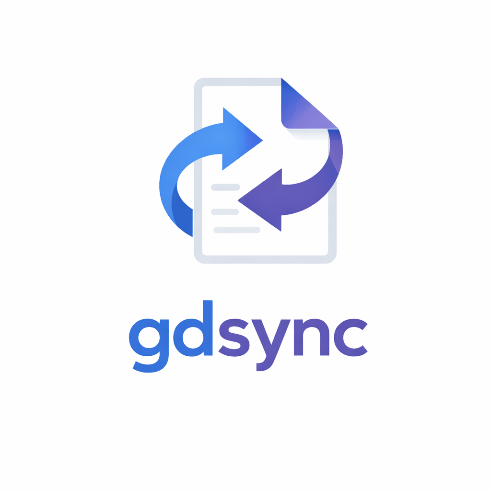

gdsyncLast updated: April 14, 2026
By downloading, installing, or using gdsync ("the Software"), you agree to be bound by these Terms of Service ("Terms"). If you do not agree to these Terms, do not use the Software.
gdsync is a free, open-source command-line tool that synchronizes Google Docs with local files for editing. It is provided as-is for use by developers and AI agents. gdsync is not affiliated with, endorsed by, or sponsored by Google LLC.
You are solely responsible for:
You must not use gdsync to access, modify, or exfiltrate documents for which you do not have authorized permission.
gdsync requires you to create and configure your own Google Cloud Platform ("GCP") project. You are solely responsible for your GCP project, its configuration, its compliance with Google's policies, and any costs incurred through its use. While the Google APIs used by gdsync are generally available at no cost, other GCP services and usage tiers may incur charges for which you are responsible.
gdsync provides an optional authentication proxy service to simplify initial OAuth setup. This service:
Use of the auth proxy is optional. You may configure gdsync to authenticate directly through your own GCP project's OAuth credentials.
gdsync operates locally on your machine. The Software does not collect, transmit, or store telemetry, usage data, or document content to any server controlled by the gdsync maintainers, except as described in Section 5 regarding the optional auth proxy.
THE SOFTWARE IS PROVIDED "AS IS" AND "AS AVAILABLE," WITHOUT WARRANTY OF ANY KIND, EXPRESS OR IMPLIED, INCLUDING BUT NOT LIMITED TO THE IMPLIED WARRANTIES OF MERCHANTABILITY, FITNESS FOR A PARTICULAR PURPOSE, TITLE, AND NON-INFRINGEMENT. THE GDSYNC MAINTAINERS DO NOT WARRANT THAT THE SOFTWARE WILL BE ERROR-FREE, UNINTERRUPTED, SECURE, OR COMPATIBLE WITH ALL DOCUMENTS, SYSTEMS, OR CHANGES TO THE GOOGLE API.
TO THE FULLEST EXTENT PERMITTED BY APPLICABLE LAW, IN NO EVENT SHALL THE GDSYNC MAINTAINERS, CONTRIBUTORS, OR LICENSORS BE LIABLE FOR ANY INDIRECT, INCIDENTAL, SPECIAL, CONSEQUENTIAL, OR PUNITIVE DAMAGES, OR ANY LOSS OF DATA, PROFITS, REVENUE, GOODWILL, OR BUSINESS OPPORTUNITY, ARISING OUT OF OR RELATED TO YOUR USE OF OR INABILITY TO USE THE SOFTWARE, EVEN IF ADVISED OF THE POSSIBILITY OF SUCH DAMAGES.
IN NO EVENT SHALL THE AGGREGATE LIABILITY OF THE GDSYNC MAINTAINERS EXCEED THE AMOUNT YOU PAID FOR THE SOFTWARE (WHICH IS ZERO).
You agree to indemnify, defend, and hold harmless the gdsync maintainers and contributors from and against any claims, liabilities, damages, losses, and expenses (including reasonable attorneys' fees) arising out of or related to your use of the Software, your violation of these Terms, or your violation of any third-party rights.
These Terms may be updated at any time. Material changes will be reflected by updating the "Last updated" date above. Your continued use of the Software after any modification constitutes acceptance of the revised Terms. It is your responsibility to review these Terms periodically.
These Terms shall be governed by and construed in accordance with the laws of the State of Colorado, without regard to its conflict of law provisions.
If any provision of these Terms is held to be invalid or unenforceable, the remaining provisions shall remain in full force and effect.
These Terms, together with the MIT License under which the Software is released, constitute the entire agreement between you and the gdsync maintainers regarding the Software and supersede all prior agreements and understandings.
gdsync is released under the MIT License.
For questions about these Terms, open an issue at github.com/kylecooper7/gdsync/issues.